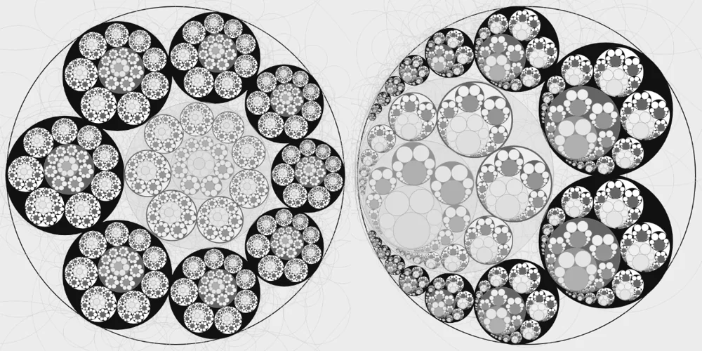
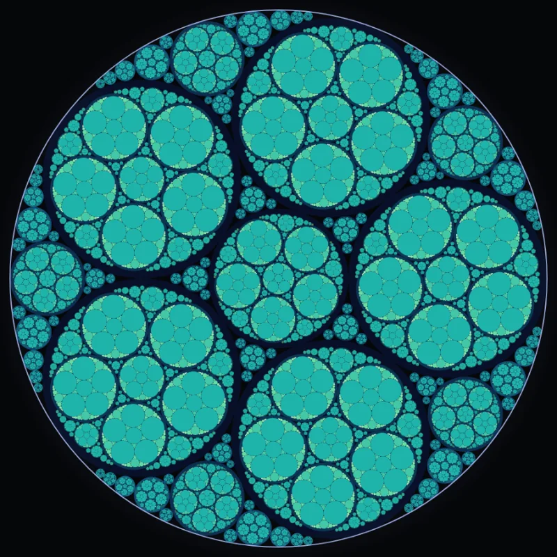
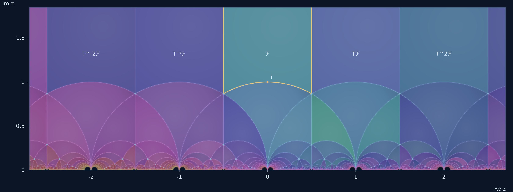

Interactive geometry · Abstract algebra
Abstract Algebra圆链、分形与模群
从圆的相切与反演，到整数矩阵在上半平面的作用。选择一个实验，调整参数，观察递归结构和色彩随层级展开。


Interactive geometry · Abstract algebra
从圆的相切与反演，到整数矩阵在上半平面的作用。选择一个实验，调整参数，观察递归结构和色彩随层级展开。


